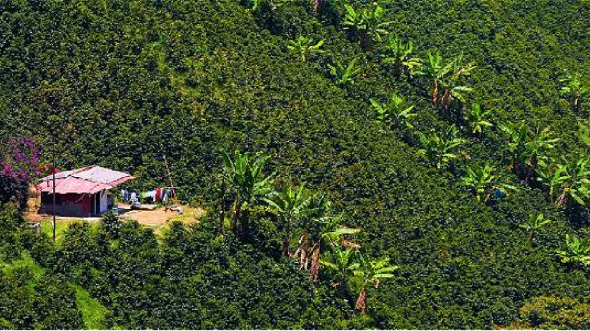
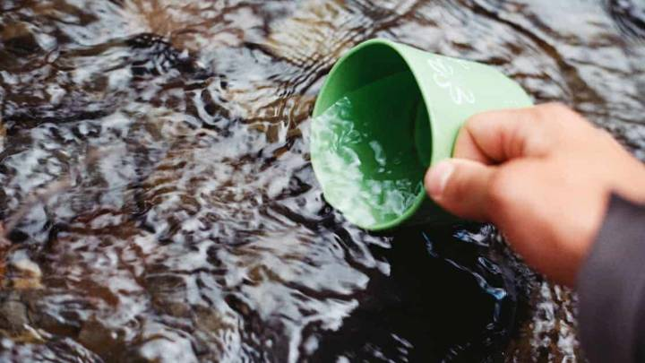
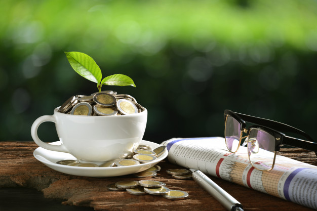
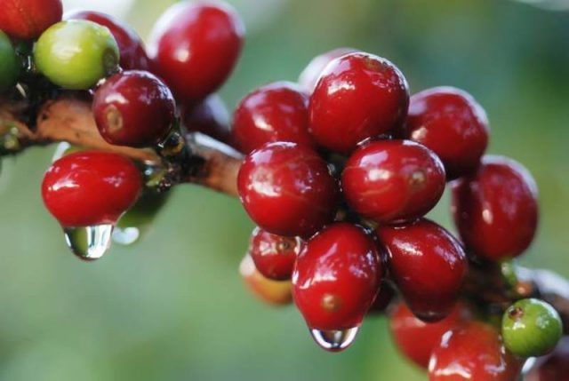
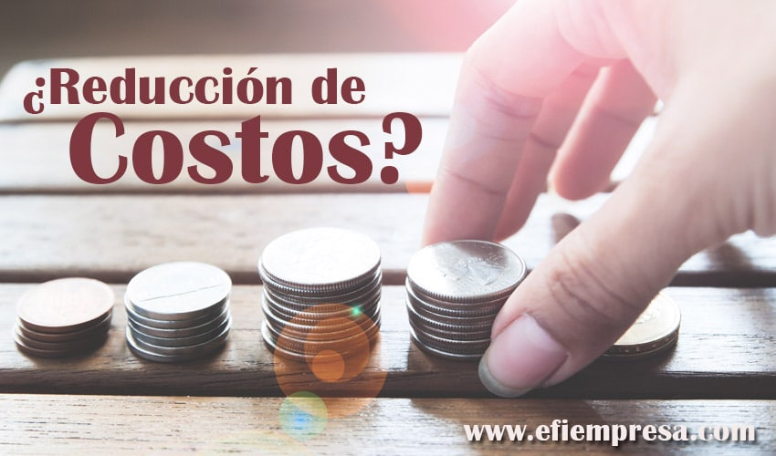
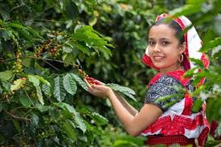
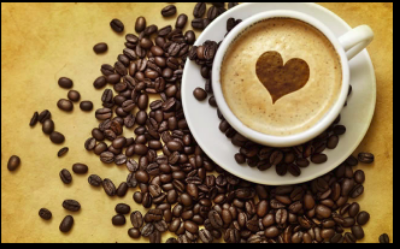

-
arrow_downward
Sostenibilidad Ambiental
Aportes destacados en nuestra gestión ambiental
Cenicafé nuestro brazo científico ha contribuido al desarrollo de una caficultura más limpia y respetuosa con el entorno: A través del desarrollo de variedades resistentes a enfermedades y la promoción de prácticas de manejo integral evitando el uso de fungicidas, plaguicidas y herbicidas. El desarrollo de tecnologías para el beneficio húmedo del café: tanque-tina, Becolsub, Ecomill® ha significado:Ahorro de 850 millones de litros de agua al año.
Reducir o incluso eliminar los vertimientos.
 Cultivo de caféColombia es uno de los 17 países del mundo clasificados como “megadiversos” y en la FNC trabajamos para que siga siendo así, conectando y conservando esta gran diversidad de flora y fauna que hay en nuestro país.
 Agua recurso naturalEl agua es un recurso muy valioso y escaso, por eso trabajamos en conservarla protegiendo sus nacimientos y los causes de las quebradas. También buscamos reducir su uso y lograr su descontaminación o disposición adecuada.
-
arrow_drop_down_circle
Sostenibilidad Económica
En el eje económico se trabaja a través de 3 caminos
 PrecioGarantizar al productor el mejor precio base de mercado es uno de los principales bienes y servicios públicos de la FNC, pero ayudarlo a escalar en la cadena de valor para que obtenga un mejor precio es fundamental.
 ProductividadBuscamos que el caficultor cultive las nuevas variedades desarrolladas por Cenicafé y adopte las mejores prácticas agrícolas por medio del programa “Más agronomía, más productividad”.
De producción: Tomando en cuenta sus efectos en los ingresos netos del caficultor, lo ayudamos a que logre un manejo eficiente de la finca y ponemos a su disposición nuevas tecnologías de recolección.
-
arrow_drop_down
Sostenibilidad Social
Aportes destacados al desarrollo rural colombiano
El esfuerzo de la institucionalidad cafetera se ha volcado a fortalecer no solo el aparato productivo de la caficultura colombiana, sino a procurar la sostenibilidad del sector y a mejorar la calidad de vida y el bienestar de miles de habitantes rurales.
En Colombia, casi 30% de los caficultores son mujeres, y diversos estudios confirman que su protagonismo en la economía familiar se traduce en una mayor sostenibilidad. En la FNC estamos comprometidos con la equidad de género (desde 2006 contamos con un programa dedicado a ello), el empoderamiento de la mujer y su creciente participación tanto en la cadena de valor del café como en asociaciones de productores y en los órganos de dirección gremial.
Además del respaldo institucional a todo productor, impulsamos políticas, modelos, espacios, programas y proyectos de educación, encuentro, participación, innovación y emprendimiento dedicados a los jóvenes para que estos construyan un proyecto de vida en torno al café.
El empalme generacional es uno de los principales retos en el sector cafetero. Y para ello en la FNC trabajamos desde diversos frentes.
